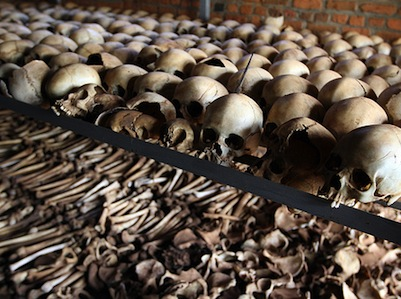
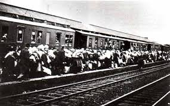
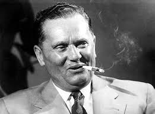
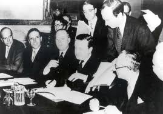

Costituiscono genocidio, secondo la definizione adottata dall'ONU, «gli atti commessi con l'intenzione di distruggere, in tutto o in parte, un gruppo nazionale, etnico, razziale o religioso». Anche la sottomissione intenzionale di un gruppo a condizioni di esistenza che ne comportino la scomparsa sia fisica sia culturale, totale o parziale, è di solito inclusa nella definizione di genocidio.
Il termine, derivante dalla greco γένος (ghénos razza, stirpe) e dal latino caedo (uccidere), è entrato nell'uso comune ed ha iniziato ad essere considerato come un crimine specifico, recepito nel diritto internazionale e nel diritto interno di molti Paesi. Il genocidio è uno dei peggiori crimini che l'uomo possa commettere perché comporta la morte di migliaia, a volte milioni, di persone e la perdita di patrimoni culturali immensi. È pertanto definito dalla giurisprudenza un crimine contro l'umanità.

La deportazione è il trasferimento coattivo di un individuo o un gruppo di individui poi obbligati a risiedere in un luogo diverso dal proprio dove vi vengono condotti con la forza.
Si differenzia dal confino e dall'esilio principalmente perché in genere al trasferimento segue la restrizione in determinate aree o proprio la reclusione, mentre il confino è più propriamente solo l'obbligo di risiedere in una determinata località e l'esilio è il mero divieto di soggiornare nel territorio nazionale.

Josip Broz (grafia cirillica: Јосип Броз, più conosciuto con il nome di battaglia di maresciallo Tito (Тито) Kumrovec, 7 maggio 1892 – Lubiana, 4 maggio 1980) è stato un rivoluzionario, capo di Stato e dittatore jugoslavo.
Fu cofondatore del Partito Comunista Jugoslavo (KPJ) nel 1920, membro del Partito Comunista dell'Unione Sovietica e della polizia segreta sovietica (NKVD). Dal 1935 ha comandato dal 4 luglio 1941 l'Esercito popolare di liberazione della Jugoslavia, movimento comunista della Resistenza jugoslava contro i tedeschi, gli ustascia croati e gli italiani e ha partecipato in posizione preminente dal 26 novembre 1942 al Comitato Antifascista di Liberazione Nazionale della Jugoslavia (AVNOJ).
Il movimento antifascista titino, grazie ad un'estesa guerriglia ed all'appoggio degli Alleati, in particolare dell'Armata Rossa e della Gran Bretagna, respinse l'Asse dai territori dell'ex Jugoslavia. Sconfisse anche i cetnici (JVUO) del generale Dragoljub Mihailović, movimento di liberazione rivale. A seguito delle elezioni dell'11 novembre 1945, venne dichiarato decaduto il re Pietro II e costituita la Repubblica Socialista Federale di Jugoslavia, una dittatura monopartitica che Tito governò come Primo Ministro tra il 29 novembre 1945 ed il 29 giugno 1963 e come Presidente della Repubblica dal 14 gennaio 1953 alla morte.
Josip Broz Tito il 15 aprile 1952 sposa la sua segretaria ed ex partigiana Jovanka Budisavljević. Tito è stato uno dei membri fondatori del Cominform, ma ha resistito all'influenza sovietica (cfr. Titismo) ed è divenuto uno dei maggiori promotori del Movimento dei paesi non allineati. Per quanto avesse costituito uno stato autoritario,Tito è riuscito in vita a promuovere la propria immagine sia in Jugoslavia, presentandosi come simbolo dell'unione tra le nazioni jugoslave, sia in Occidente, avvalendosi, in patria, dell'instaurazione di un culto della personalità della sua figura ed, in Occidente, del peso esercitato sugli equilibri USA-URSS dalla sua politica di stato comunista ma non sovietico.
Il 3 ottobre 2011 la Corte Costituzionale della Slovenia ha dichiarato incostituzionale la dedicazione di una strada di Lubiana a Tito, avvenuta nel 2009, dichiarando che ciò avrebbe comportato la glorificazione del regime totalitario da questi costituito e una giustificazione delle gravi violazioni dei diritti dell'uomo e della dignità umana avvenute durante il suo regime: si tratta della prima decisione in cui un organo giudiziario di uno stato dell'ex Jugoslavia ha preso una posizione netta sulla valutazione dell'opera di Tito.
Fu cofondatore del Partito Comunista Jugoslavo (KPJ) nel 1920, membro del Partito Comunista dell'Unione Sovietica e della polizia segreta sovietica (NKVD). Dal 1935 ha comandato dal 4 luglio 1941 l'Esercito popolare di liberazione della Jugoslavia, movimento comunista della Resistenza jugoslava contro i tedeschi, gli ustascia croati e gli italiani e ha partecipato in posizione preminente dal 26 novembre 1942 al Comitato Antifascista di Liberazione Nazionale della Jugoslavia (AVNOJ).
Il movimento antifascista titino, grazie ad un'estesa guerriglia ed all'appoggio degli Alleati, in particolare dell'Armata Rossa e della Gran Bretagna, respinse l'Asse dai territori dell'ex Jugoslavia. Sconfisse anche i cetnici (JVUO) del generale Dragoljub Mihailović, movimento di liberazione rivale. A seguito delle elezioni dell'11 novembre 1945, venne dichiarato decaduto il re Pietro II e costituita la Repubblica Socialista Federale di Jugoslavia, una dittatura monopartitica che Tito governò come Primo Ministro tra il 29 novembre 1945 ed il 29 giugno 1963 e come Presidente della Repubblica dal 14 gennaio 1953 alla morte.
Josip Broz Tito il 15 aprile 1952 sposa la sua segretaria ed ex partigiana Jovanka Budisavljević. Tito è stato uno dei membri fondatori del Cominform, ma ha resistito all'influenza sovietica (cfr. Titismo) ed è divenuto uno dei maggiori promotori del Movimento dei paesi non allineati. Per quanto avesse costituito uno stato autoritario,Tito è riuscito in vita a promuovere la propria immagine sia in Jugoslavia, presentandosi come simbolo dell'unione tra le nazioni jugoslave, sia in Occidente, avvalendosi, in patria, dell'instaurazione di un culto della personalità della sua figura ed, in Occidente, del peso esercitato sugli equilibri USA-URSS dalla sua politica di stato comunista ma non sovietico.
Il 3 ottobre 2011 la Corte Costituzionale della Slovenia ha dichiarato incostituzionale la dedicazione di una strada di Lubiana a Tito, avvenuta nel 2009, dichiarando che ciò avrebbe comportato la glorificazione del regime totalitario da questi costituito e una giustificazione delle gravi violazioni dei diritti dell'uomo e della dignità umana avvenute durante il suo regime: si tratta della prima decisione in cui un organo giudiziario di uno stato dell'ex Jugoslavia ha preso una posizione netta sulla valutazione dell'opera di Tito.

La locuzione secondo dopoguerra italiano indica un periodo storico compreso tra la fine della seconda guerra mondiale e gli anni seguenti in un periodo il cui termine va considerato nel contesto complessivo e che può essere determinato schematicamente da date diverse tra di loro.
Secondo un'interpretazione storiografica, il deterioramento del governo di centro-sinistra, nato come un tentativo di riformare le istituzioni politiche italiane, segnò la fine di quelle speranze di rinnovamento diffuse nel secondo dopoguerra che andrebbe quindi compreso in un'età approssimativamente estesa tra il 1945 e gli anni '60 che segnano la crisi definitiva dei partiti e della società civile che avevano fondato la Repubblica nata dopo la guerra.
